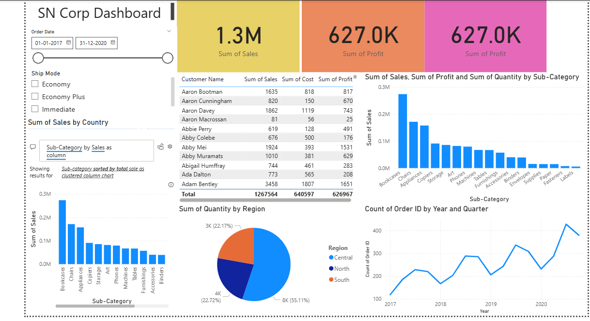

SN Corporation Dashboard – Power BI Project

Project Overview
This dashboard analyzes global SN Corporation sales, revenue distribution,
product performance, order trends, and regional contributions.
Dashboard
📊 View Dashboard
Dataset
SN Corp Dashboard Dataset.xlsx
Key Insights
- Revenue spikes consistently during Q2 and Q4.
- North America accounts for the majority of sales volume.
- Top 5 products contribute nearly 60% of total revenue.
- Shipping delays decrease customer satisfaction in two key regions.
Why This Matters
SN Corp leadership uses these insights to optimize supply chain decisions,
improve forecasting, and refine sales strategies based on regional performance.